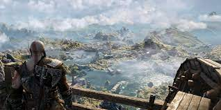
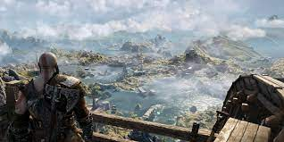

UN MUNDO MÁS SOMBRÍO Y PRIMITIVO
Con mármol y columnas ornamentadas desde el Olimpo hasta el bosque, este es un nuevo reino, con sus propias especies de criaturas, monstruos y dioses.

Los más grandes héroes de los nueve reinos
Lugares
 

Lucha en el reino nórdico
Con una venganza contra los dioses del Olimpo en un pasado distante, Kratos ahora vive como un mortal en el reino de los dioses y monstruos nórdicos.
Es en ese mundo duro e implacable en el que él debe luchar para sobrevivir... y enseñar a su hijo a hacer lo mismo.
Armas Legendarias
Espada del Caos
Para Kratos, ninguna espada es mejor que la Espada del Caos, forjada en las profundidades más sucias del Hades.
Hacha Leviatán
Forjada por los mismos hermanos huldra que forjaron Mjölnir, fue creada justo para ser opuestas.
Lanza Draupnir
Es la nueva arma distintiva de Kratos, y la primera que es realmente suya. Forjada por La Dama de la Forja utilizando el legendario anillo Draupnir de Odín, y alimentada con la propia sangre de Kratos, esta obra maestra es mágicamente capaz de replicarse a sí misma y de honrar al general en el que se ha convertido Kratos, permitiéndole renovar su herencia espartana y sus valores. representa: disciplina, fuerza y honor
Mjölnir
Mjölnir es el legendario martillo empuñado por Thor, el dios Aesir del Trueno.